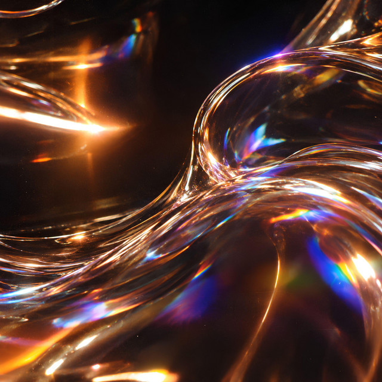
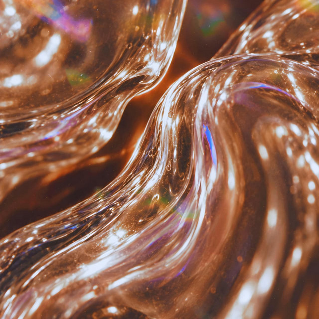
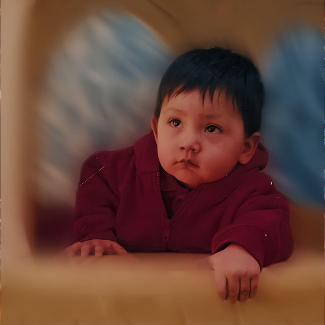

G.E.M.
El primero: 13 canciones para audífonos a las tres de la mañana, sobre quedarte, irte, volver y soltar.
El primero: 13 canciones para audífonos a las tres de la mañana, sobre quedarte, irte, volver y soltar.




Hago música electrónica desde la Ciudad de México.
G.E.M., mi primer disco, salió en octubre de 2026: canciones para audífonos a las tres de la mañana. Lo que sigue es para la pista, y cada semana lo manda un Josh distinto.
Me llamo Joshua Flores. Soy diseñador y llevo años tocando en CDMX.